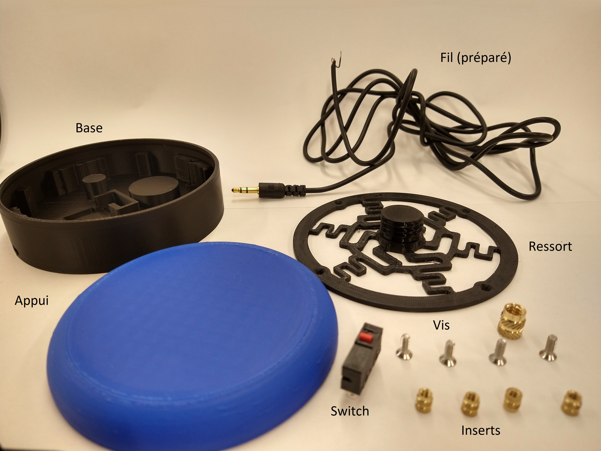
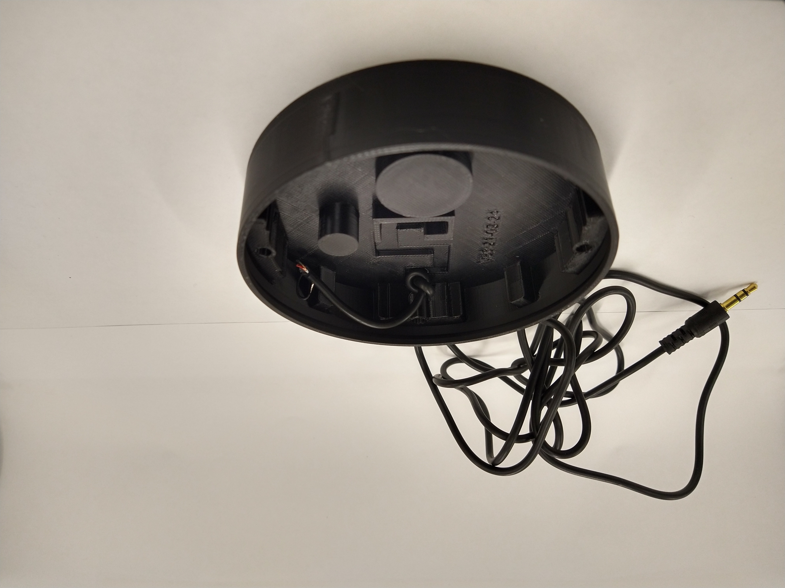
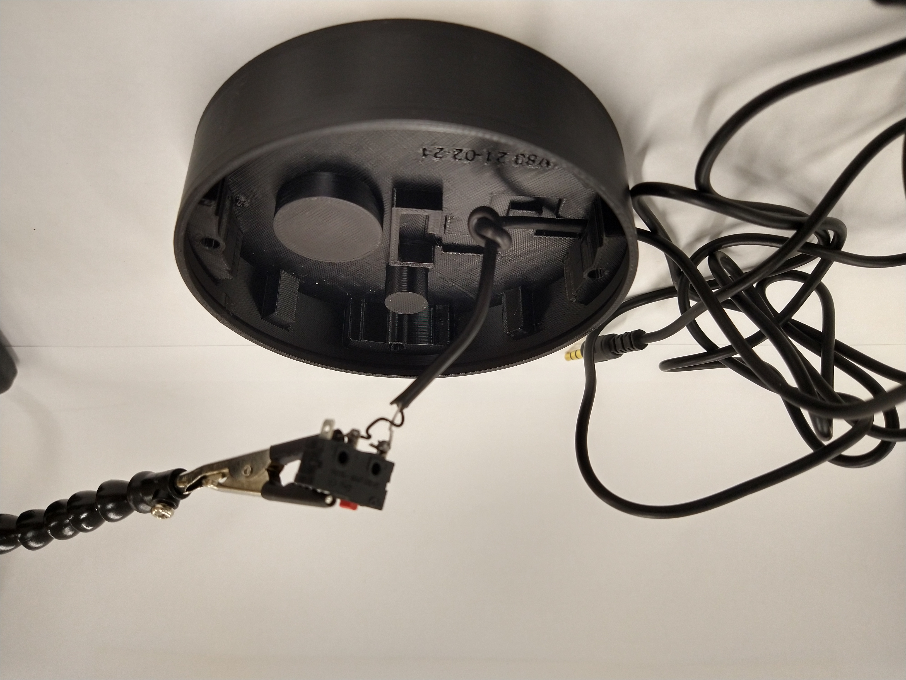
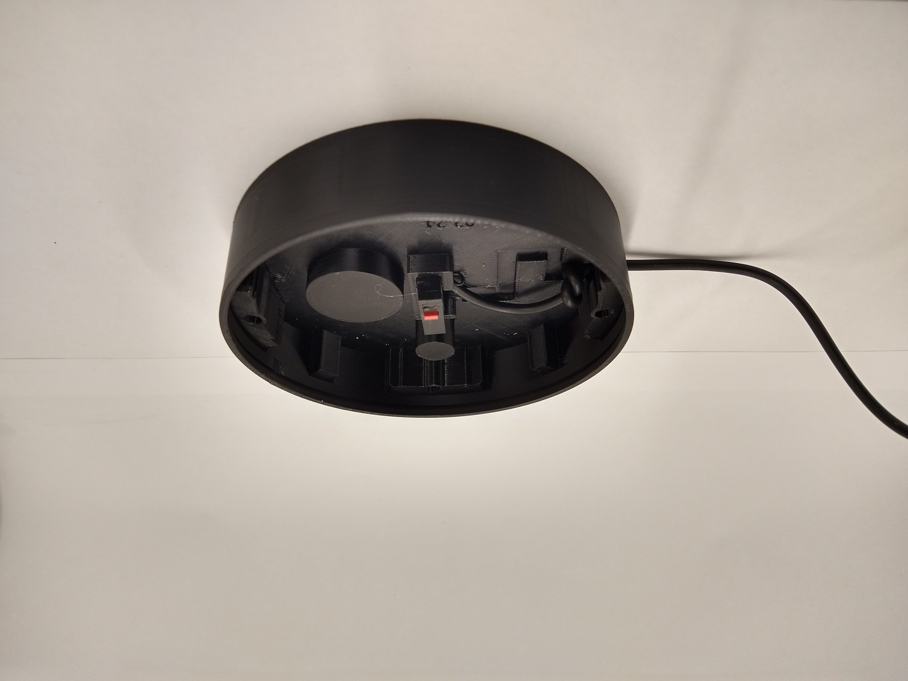
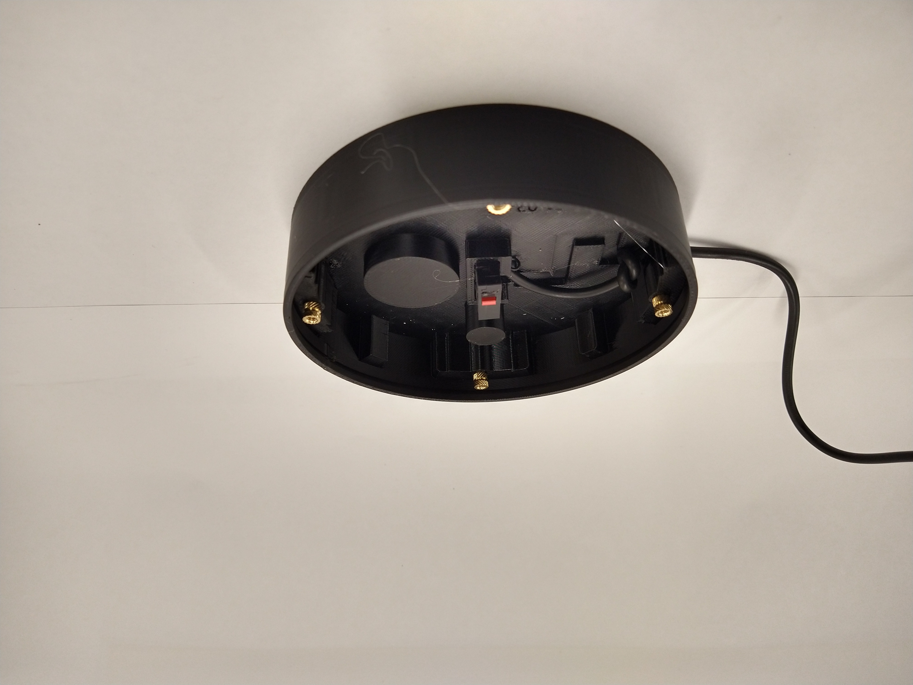
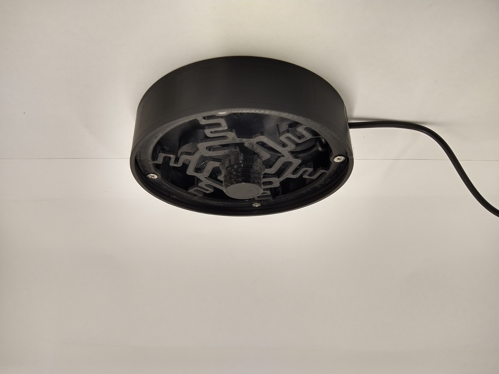

Switch adaptée
Ce modèle de switch adaptée a été conçu pour une clientèle d’enfants polyhandicapés, suite à l’expérimentation à long terme avec les modèles commerciaux typiquement disponibles dans un milieu scolaire (e.g.¸Jelly bean, Big Mack, Spec). Les observations et les retours d’expérience accumulés au fil des années dans divers environnements offrant des services à cette population ont façonné les principes directeurs de son développement.
- Coût: C'est le facteur qui est le plus déterminant dans la création de matériel adapté en général. Le coût des appareils commerciaux les rend inaccessibles pour une partie importante de la population. Même pour un milieu spécialisé avec du financement public, il est difficile d'avoir accès à suffisament de matériel pour combler les besoins des usagers. Il est donc capital de garder le prix le plus bas possible, au détriment des autres facteurs qui sont pris en compte dans la conception.
- Réparabilité: Même si les modèles commerciaux de switch adaptée sont typiquement très solides et de bonne qualité, ils sont pratiquement tous conçus pour être irréparables dans le cas où ils subissent un bris. Les composantes de plastique sont collés, les vis sont cachées et aucune information sur leur conception est fournie en ligne. Cela crée à la fois du gaspillage et des frais supplémentaires pour les usagers qui dovient s'en procurer des neufs. Une majorité des composantes de ce modèle sont donc facilement réparable.
- Modularité: En raison de son utilisation en milieu scolaire, la modularité est un facteur important. Le besoin de pouvoir changer rapidement la couleur de l'appui ou encore d'en créer un modèle adapté à la préhension d'un élève en particulier a été pris en compte.
- Solidité: À l'instar des modèles commerciaux, il est important que ce modèle soit résistant aux chocs, puisqu'il peut être utilisé par des personnes qui peuvent avoir des mouvements spastiques ou un contrôle limité de leur force.
- Simplicité: La switch devrait être conçue pour être aussi simple que possible à créer et asembler, afin de permettre à toute personne intéressée de pouvoir la construire.
Matériaux
Voici la liste des matériaux en format excel. Il y a des liens amazon et aliexpress pour ce qui doit être acheté. La majorité de ces pièces sont difficiles à trouver dans des magasins locaux, ce qui rend essentiel l’utilisation des achats en ligne. Le coût total devrait être de 5 à 7 dollars, cependant, certaines pièces requièrent d’être achetées en plus grande quantité (ne se vendent pas à l’unité) Pour les trois pièces qui doivent être imprimées, voici les fichiers et les instructions: 
- La base s'imprime en PLA, sans support. Alternativement, une version avec des espaces pour ajouter une méthode de montage sur les côtés est aussi disponible ici.
- L'appui s'imprime lui aussi en PLA, sans support. Plusieurs autres versions de l'appui seront publiées sous peu. Puisqu'il s'agit d'un fichier step, vous pouvez le modifier à votre guise.
- Le ressort doit être imprimé en PETG pour fonctionner de façon optimale. En PLA, la switch pourra probablement être utilisée, mais elle sera moins efficace et risque de briser rapidement. Nous avons testé le ressort en PLA, PETG, ABS et Nylon et le PETG offre les meilleurs résultats. Encore une fois, sans support.
Assemblage
-
1
 Passer le fil préparé dans le trou qui est près de la base. Faire un noeud à l'intérieur. Cela va augmenter la résistance de l'appareil, si le fil est tiré, le noeud va absorber la force et empêcher que la soudure cède.
-
2
fer à souder, troisième main
 Souder le fil à la switch. Les deux terminaux à utiliser sont NO (Normally Open) et C (Common). Typiquement, ils sont numérotés 1 et 3 sur ce modèle de switch. Le fil doit être soudé sur le côté du terminal; s'il est en dessous, la switch ne sera pas appuyée sur la base de manière adéquate. Pour cette étape, il est préférable d'avoir un fer à souder qui permet l'ajustement de température et de la mettre le plus bas possible. Cela empêche le plastique autour du métal de fondre car cela pourrait aussi contribuer à ce que la switch ne soit pas bien placée dans le réceptacle.
-
3
Colle chaude
 Mettre un peu de colle chaude dans le fond de la base. Une ou deux gouttes devraient être suffisantes. L'objectif est de faire tenir la composante en place. Placer la switch avec le bouton vers la droite, si le fil est devant vous (le petit bouton rouge doit arriver au milieu de la base). Limiter la quantité de colle permet de faire des réparations plus facilement si c'est nécessaire.
-
4
Fer à souder, pinces
 Introduire les inserts de cuivre M3 aux emplacements indiqués. Utiliser le fer à souder afin de les intégrer à la base.
-
5
Tournevis
 Laisser reposer pendant cinq minutes avant de procéder, afin de laisser le temps au plastique autour des inserts de refroidir. Placer le ressort sur la base et fixer les 4 vis dans les trous du ressorts en les alignants avec les inserts enfoncés dans la base.
-
6
 Visser l'appui sur le ressort. Un peu de force peut être appliquée afin qu'il tienne bien en place. Une fois que cela est fait, tester la switch à l'aide d'un jouet adapté ou d'un autre appareil dont vous vous êtes assuré du bon fonctionnement au préalable.
Visser l'appui sur le ressort. Un peu de force peut être appliquée afin qu'il tienne bien en place. Une fois que cela est fait, tester la switch à l'aide d'un jouet adapté ou d'un autre appareil dont vous vous êtes assuré du bon fonctionnement au préalable.
Commentaires et critiques
Le commentaire que nous avons reçu le plus souvent par rapport à cette switch est qu’elle est trop haute. Il est possible de concevoir des modèles plus petits, mais cela nécessiterait d’utiliser des interrupteurs à profil bas, ce que nous examinons. Sinon, l’emploi de colle chaude n’est pas idéal côté réparabilité, d’autres moyens de tenir la switch en place tout en gardant le mécanisme fonctionnel et simple d’assemblage devraient être envisagés.